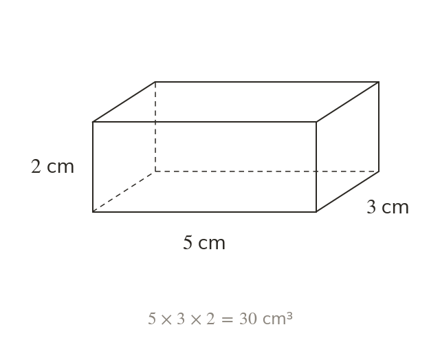
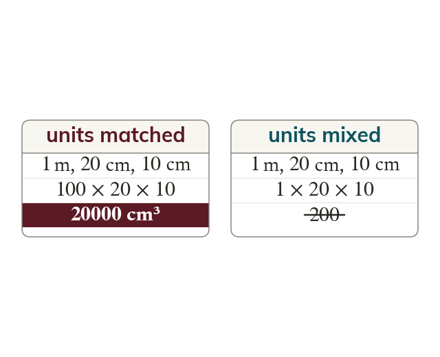
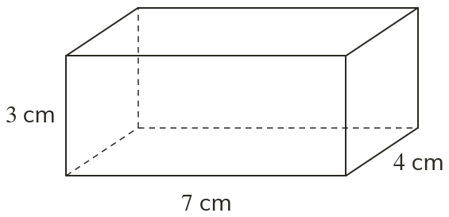
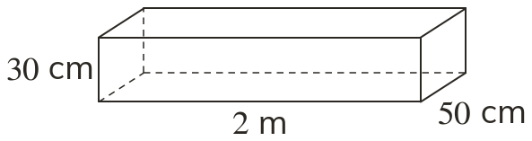
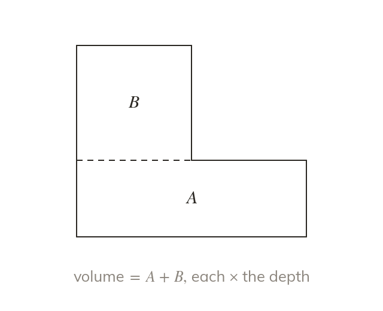
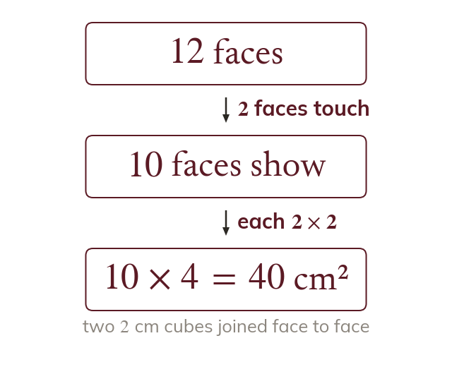

Volume fills three dimensions
Volume is the space inside a solid. For a cuboid, multiply length × width × height.
Volume is the space inside a solid, found for a cuboid by multiplying length × width × height.
Volume fills three dimensions rather than two, so a cuboid's volume needs all three of its lengths, in matching units.
Work down the page at your own pace. Write every answer in your book first, then click to check it.
Read each card, then follow the worked examples one step at a time.

Volume is the space inside a solid. For a cuboid, multiply length × width × height.

Convert all three lengths to the same unit first. Mixed units give a meaningless answer.


Pick an answer. If it's wrong, the feedback tells you which mistake it was.


Read each card, then follow the worked examples one step at a time.

Split a compound solid into cuboids and add their volumes. Or treat it as a larger cuboid with a piece removed.

Joined faces are hidden inside the solid. Leave them out of the surface area.
Pick an answer. If it's wrong, the feedback tells you which mistake it was.


Finished? Next lesson: 9.13.3 Volume Units and Reverse.
For each skill, tap the one that is true for you today. Your Revise pages start with anything you mark Not yet.
Your ratings are saved on this device only.
Log in, then search for a code to practise that skill.
Videos, worksheets and more on each part of this lesson.